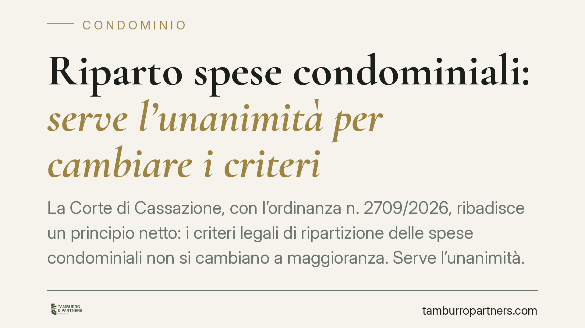

Riparto spese condominiali: serve l'unanimità per cambiare i criteri
La Corte di Cassazione, con l'ordinanza n. 2709/2026, ribadisce un principio netto: i criteri legali di ripartizione delle spese condominiali non si cambiano a maggioranza. Serve l'unanimità. Le delibere assunte in deroga all'art. 1123 c.c. sono radicalmente nulle, e lo stesso vale per le transazioni firmate dall'amministratore senza un mandato unanime. Vediamo cosa significa in concreto.

Il caso e la decisione
La questione affrontata dalla Cassazione è tra le più ricorrenti nella vita condominiale: un'assemblea può, a maggioranza, decidere di distribuire le spese in modo diverso da quanto previsto dalla legge o dalle tabelle millesimali?
La risposta della Corte, nell'ordinanza n. 2709/2026, è negativa. La modifica dei criteri di ripartizione incide su un diritto patrimoniale di ciascun condomino. Per questo non basta la maggioranza: occorre il consenso di tutti.
Inquadramento normativo
Il riferimento è l'art. 1123 del Codice civile, che fissa i criteri legali di ripartizione. Il primo comma stabilisce la regola generale: le spese sono sostenute dai condomini in misura proporzionale al valore della proprietà di ciascuno, salvo diversa convenzione. I commi successivi disciplinano le spese per l'uso differenziato e quelle relative a parti comuni che servono solo alcuni condomini.
Il punto decisivo è l'inciso "salvo diversa convenzione". La deroga ai criteri legali è possibile, ma solo su base convenzionale, cioè con l'accordo di tutti i condomini. Non è materia che l'assemblea possa decidere a colpi di maggioranza.
La Corte qualifica le delibere adottate in violazione di questo principio come radicalmente nulle, non semplicemente annullabili. La differenza non è formale. Una delibera annullabile va impugnata entro trenta giorni, altrimenti si consolida. Una delibera nulla, invece, può essere contestata in ogni tempo da chiunque vi abbia interesse: non si sana con il decorso del termine.
Il ruolo dell'amministratore
L'ordinanza affronta anche un profilo spesso trascurato: le transazioni. Se l'amministratore firma un accordo transattivo che, di fatto, modifica il riparto delle spese, quell'atto è inefficace in assenza di un mandato unanime dell'assemblea.
L'amministratore non può disporre dei diritti patrimoniali dei singoli condomini. Il suo potere di rappresentanza trova un limite nelle materie che richiedono l'unanimità: su quelle, senza un'autorizzazione di tutti, l'atto non vincola i condomini dissenzienti o estranei.
Implicazioni pratiche
Per il condomino, la pronuncia offre una tutela robusta. Chi si veda addossare una quota di spesa in base a un criterio modificato senza il suo consenso può contestare la decisione anche a distanza di tempo, perché la nullità non è soggetta al termine di decadenza dei trenta giorni.
Per l'amministratore, il messaggio è opposto: prudenza. Portare in approvazione a maggioranza una modifica dei criteri di riparto, o sottoscrivere transazioni che li alterano, espone a delibere destinate a cadere e a possibili profili di responsabilità.
Per l'assemblea, infine, la distinzione da tenere a mente è quella tra gestione e modifica dei diritti. L'assemblea decide a maggioranza su come applicare i criteri esistenti e sull'ordinaria amministrazione. Non può, con lo stesso quorum, riscrivere la regola di base che stabilisce chi paga cosa.
Resta ferma la possibilità di cambiare i criteri: la via è il regolamento di natura contrattuale o una convenzione sottoscritta da tutti. Strumenti che richiedono tempo e consenso, ma che offrono stabilità, perché una volta formati non sono più ribaltabili a maggioranza.
Cosa fare in concreto
- Verifica il titolo su cui si fonda il riparto applicato: tabelle millesimali, regolamento contrattuale o delibera assembleare. Distinguere la fonte è il primo passo per capire se la ripartizione è legittima.
- Controlla i quorum con cui è stata assunta ogni delibera che modifica i criteri di spesa: se manca l'unanimità su una materia che la richiede, la decisione è nulla.
- Non attendere i trenta giorni se sospetti una nullità: a differenza dell'annullabilità, non c'è un termine di decadenza, ma agire con tempestività resta sempre consigliabile.
- Chiedi all'amministratore il mandato che legittima eventuali transazioni incidenti sul riparto: in sua assenza, l'atto non vi vincola.
- Documenta per iscritto ogni consenso quando si intende derogare ai criteri legali: la convenzione deve risultare chiaramente, meglio se trasfusa nel regolamento contrattuale.
Consigliamo, nei casi dubbi, di far esaminare verbali e tabelle prima dell'assemblea, così da impostare correttamente le votazioni ed evitare delibere inefficaci.
Ogni condominio ha una storia a sé.
Se gestisci un'amministrazione e vuoi un confronto su una specifica questione condominiale, scrivi allo studio. Ti rispondiamo entro un giorno lavorativo.